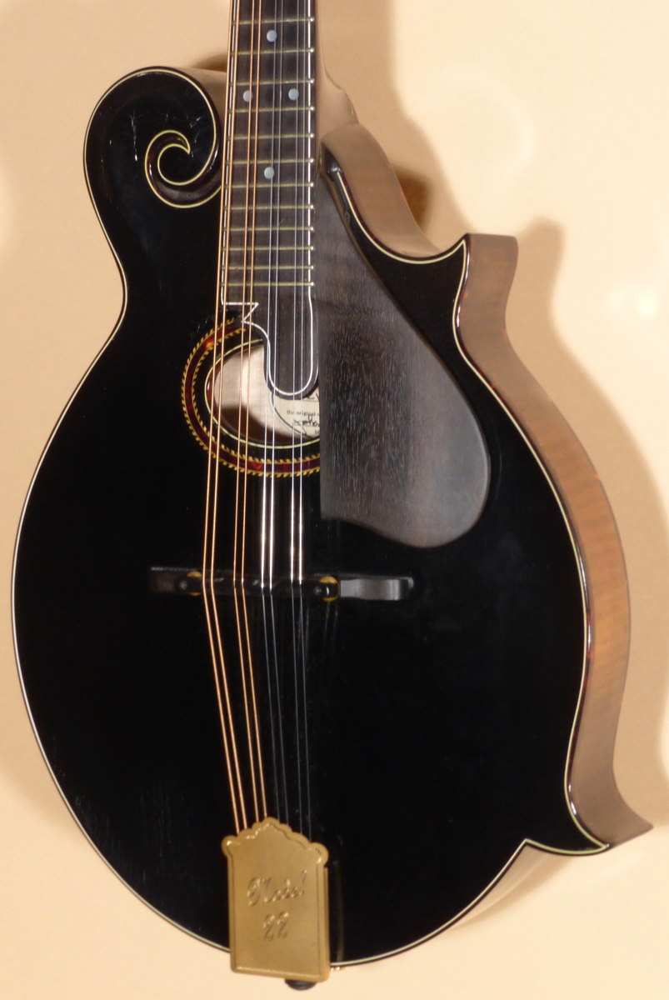
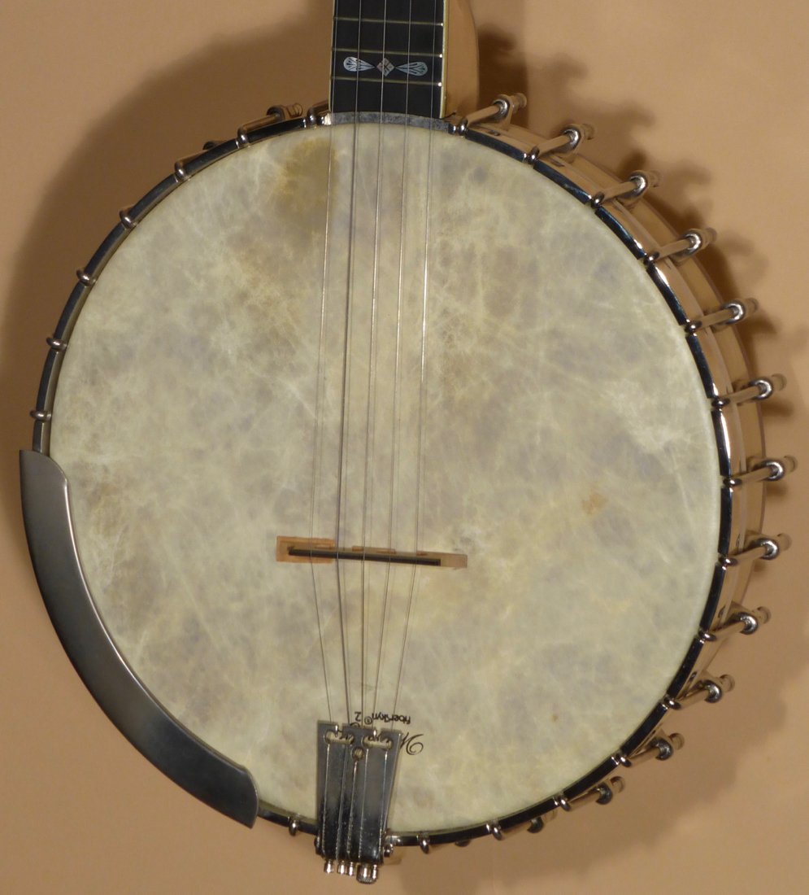
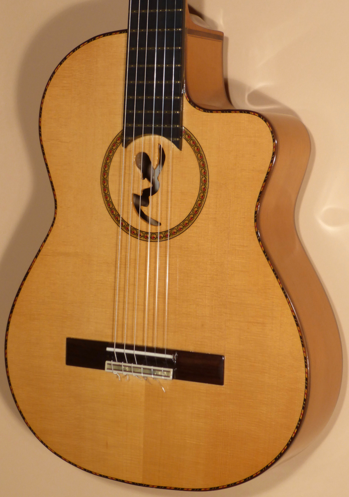
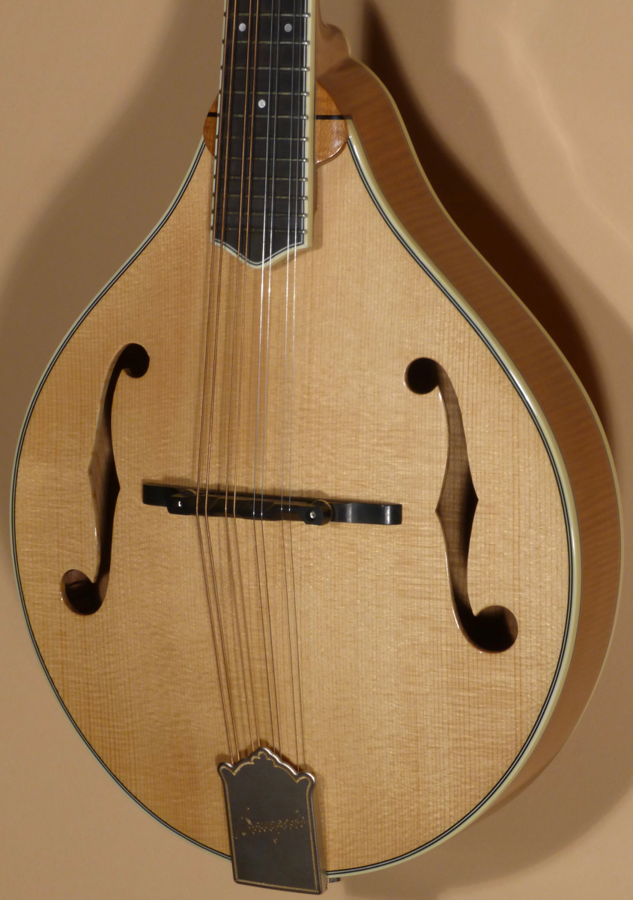
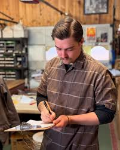
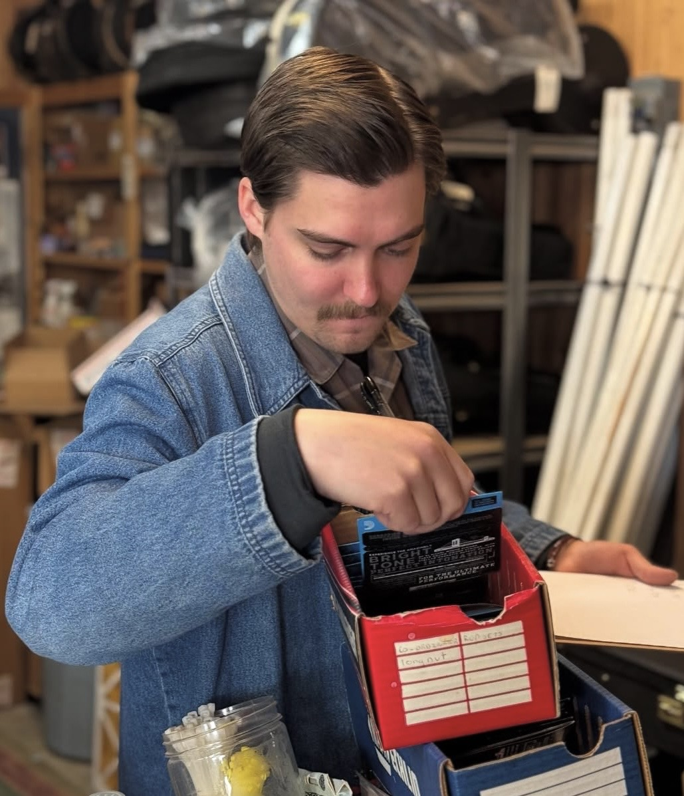

Greg Boyd's House of Fine Instruments
Featured Products
-

-

Recent Leonard Coulson 11" Whyte Laydie #2
-

Manuel Rodriguez & Sons FFCUT Classical
-

2023 Bourgeois M5A Mandolin
Testimonials
-
Hi Greg,
It was, indeed, a pleasure doing business with you. I recommend your shop whenever I have an opportunity to do so. I’ll see you at the next Wintergrass.
Best, Phil
-
Hey Greg,
I want to personally thank you for doing me and Hank a great big favour in packing and shipping the fender. Wow man, nice job, It arrived this morning in perfect shape, and I am thrilled to pieces to start playing around with it…… you did me a solid man, and I owe you one, big time. Dinner or lunch will be on me next time I venture to Msla. Ya never know it may still happen this year, but getting the time is gonna be a bit tricky. On another note, the Bourgeois is sounding better and better every time I play it. I’m astounded by the tone. And as you said once, the thing practically plays itself, all the ringing and vibration, I’m learning how to damp it off while I play it for all the sounds coming out of that box. and the Weber? such a beautiful mandolin …..again, that one is still opening up I believe, it shocks me too, everytime I play it. phew. so little time……… so, with much to be grateful for I thank you again my friend for being apart of my musical life.
Cheers, and I hope you are well.
Best, Phil
-
Hi,
FYI, the package arrived yesterday… opened (the) case this morning and found a very fine instrument. Am very happy with the condition and quality of the guitar. Just want to thank you very much for packing it so well to avoid any damages during shipment. And thank you for being so reliable to do business with online. Instrument was exactly how you described. I would very highly recommend Boyd’s House of Fine Instruments and will certainly return to do more business with you.
– Howard M.
Meet The Team
-

Peter M. Hawkins
Packing Specialist
Miles Hawkins is one of the longest standing members of the ‘House of Fine Instrument’ Team. He’s often the first face you see when entering the shop and is always willing to lend an extra hand with whatever it may be. From packaging, to helping out customers and everything in between, Miles is a corner stone to the business.
-

Peter M. Hawkins
Luthier
Miles Hawkins is one of the longest standing members of the ‘House of Fine Instrument’ Team. He’s often the first face you see when entering the shop and is always willing to lend an extra hand with whatever it may be. From packaging, to helping out customers and everything in between, Miles is a corner stone to the business.
-
Peter M. Hawkins
Human Resources
Miles Hawkins is one of the longest standing members of the ‘House of Fine Instrument’ Team. He’s often the first face you see when entering the shop and is always willing to lend an extra hand with whatever it may be. From packaging, to helping out customers and everything in between, Miles is a corner stone to the business.
-
Peter M. Hawkins
Floor Manager
Miles Hawkins is one of the longest standing members of the ‘House of Fine Instrument’ Team. He’s often the first face you see when entering the shop and is always willing to lend an extra hand with whatever it may be. From packaging, to helping out customers and everything in between, Miles is a corner stone to the business.